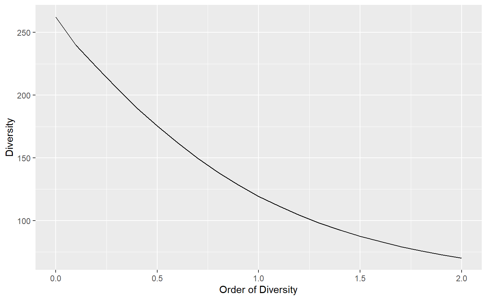

Asymptotic Estimation, Interpolation and Extrapolation
Source:vignettes/articles/extrapolation.Rmd
extrapolation.RmdEstimation of diversity in entropart relies on classical assumptions that are recalled here. The observed data is a sample of a community (or several communities if data is a meta-community). All “reduced-bias estimator” are asymptotic estimators of the community diversity: if the sample size could be extended infinitely, diversity would tend to the diversity of the whole (asymptotic) community. In hyperdiverse ecosystems such as evergreen forests, the asymptotic community generally does not exist in the field because of environmental variations: increasing the size of the sample results in sampling in different communities. Thus, the asymptotic estimators of diversity correspond to theoretical aymptotic communities that do not necessarily exist. In other words, the asymptotic diversity is that of a community that would provide the observed sample.
Diversity is accumulated as a function of sample size. HCDT entropy (thus Hill numbers and phylodiversity) can be estimated at any sample size, by interpolation down from the actual sample size and by extrapolation up to infinite sample size, i.e. the asymptotic estimator. Alternatively, sample size may be replaced by sample coverage, by interpolation from arbitrary small sample coverages to that of the actual sample, and by extrapolation up to the asymptotic estimator whose sample coverage is 1.
Asymptotic estimation
If community data is a vector of probabilities, sample size is unknown so the only available estimation is that of the actual sample.
library("entropart")## Le chargement a nécessité le package : ggplot2data("Paracou618")
# 2 ha of tropical forest, distribution of probabilities
ParacouP <- Paracou618.MC$Ps
# Diversity of order 1, no reduce-bias estimator used.
Diversity(ParacouP, q=1)## None
## 113.98Further estimation requires abundance vectors, i.e. the number of individuals per species. Then, the default estimator is the asymptotic one.
# 2 ha of tropical forest, distribution of abundances
ParacouN <- Paracou618.MC$Ns
# Diversity of order 1, best asymptotic estimator used.
Diversity(ParacouN, q=1)## UnveilJ
## 138.1078Several asymptotic estimators are available in the literature and implemented in entropart. For consistency, entropart uses the jackknife estimator of richness and the unveiled jackknife estimator for entropy. The advantage of these estimators is that they provide reliable estimations even though the sampling effort is low: then, the estimation variance increases but its bias remains acceptable because the order of the jackknife estimator is chosen according to the data. Poorly-sampled communities are estimated by a higher-order jackknife, resulting in higher estimation variance.
For well-sampled communities, i.e. in the domain of validity of the jacknife of order 1, The Chao1 estimator of diversity and the Chao-Jost estimator of entropy are the best choices because they have the best mathematical support, but they will severely underestimate the diversity of poorly-sampled communities. They also are more computer-intensive.
# Estimation of richness relies on jackknife 2 (poor sampling)
Richness(ParacouN)## Jackknife 2
## 359# Richness is underestimated by Chao1 estimator
Richness(ParacouN, Correction="Chao1")## Chao1
## 314.9348# Diversity of order 1 underestimated by Chao-Jost estimator
Diversity(ParacouN, q=1, Correction="ChaoJost")## ChaoJost
## 133.2409Choosing the estimation level
Asymptotic estimation is not always the best choice, for example when comparing the diversity of poorly-sampled communities: a lower sampe coverage can be chosen to limit the uncertainty of estimation.
# Actual sample coverage
Coverage(ParacouN)## ZhangHuang
## 0.9226675The estimation level may be a sample size or a sample coverage that is converted internally into a sample size.
# Diversity at half the sample size (interpolated)
Diversity(ParacouN, q=1, Level=round(sum(ParacouN)/2))## Interp
## 100.016# Sample size corresponding to 90% coverage
Coverage2Size(ParacouN, SampleCoverage=0.9)## [1] 861# Diversity at 90% sample coverage
Diversity(ParacouN, q=1, Level=0.9)## Interp
## 109.1493# Equal to
Diversity(ParacouN, q=1, Level=Coverage2Size(ParacouN, SampleCoverage=0.9))## Interp
## 109.1493If the sample size is smaller than the actual sample, entropy is interpolated.
If it is higher, entropy must be extrapolated. For diversity orders equal to 0 (richness), 1 (Shannon) or 2 (Simpson), explicit, almost unbiased estimators are used. Continuity of the estimation of diversity around the actual sample size is guaranted.
# Simpson diversity at levels from 0.9 to 1.1 times the sample size
Accumulation2 <- DivAC(ParacouN, q=2, n.seq=round(0.9*sum(ParacouN)):round(1.1*sum(ParacouN)))## ===========================================================================autoplot(Accumulation2)
For non-integer orders, things get more complicated. In entropart, asymptotic entropy is estimated by the unveiled jackknife estimator and rarefied down to the actual sample size. There is no reason for it to correspond exactly to the observed entropy. The asymptotic richness is the less robust part of the estimation thus it is adjusted iteratively until the rarefied entropy equals the actual sample’s entropy, ensuring continuity between interpolation and extrapolation.
Diversity accumulation
Diversity Accumulation Curves (DAC) are a generalization of the well-known Species Accumumulation Curves (SAC). They represent diversity as a function of sample size.
The DivAc()function allows to build them. A bootstrap confindence interval can be calculated around the estimated DAC by simulating random multinomial draws of the asymtpotic distribution at each sample size.
# Diversity at levels from 1 to twice the sample size
Accumulation <- DivAC(ParacouN, q=1, n.seq=1:(1.1*sum(ParacouN)), NumberOfSimulations = 1000)## ===========================================================================
===========================================================================autoplot(Accumulation)
To ensure continuity of the DAC around the actual sample, the asymptotic diversity is estimated by unveiling the aysmptotic distribution, choosing the number of species such that the rarefied diversity at the observed sample size is the observed diversity. This means that the extrapolated diversity at a high sample coverage will differ from the best asymptotic estimation, sometimes quite much if sampling level is poor.
# Extrapolation at 99.99% sample coverage
Diversity(ParacouN, q=1, Level=0.9999)## Best
## 128.3196# Unveiled Jaccknife asymptotic estimator
Diversity(ParacouN, q=1)## UnveilJ
## 138.1078# Chao-Jost estimator
Diversity(ParacouN, q=1, Correction="ChaoJost")## ChaoJost
## 133.2409Diversity profiles at a sampling level
Diversity profiles are usually asymptotic but they can be calculated at any coverage of sampling level.
# Diversity at levels from 1 to twice the sample size
Profile <- CommunityProfile(Diversity, ParacouN, Level=sum(ParacouN)*1.5)
autoplot(Profile)
Extrapolated diversity is estimated at each order such that it is continuous at the observed sample size.